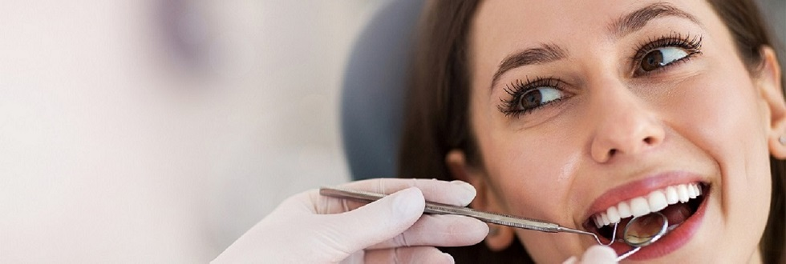
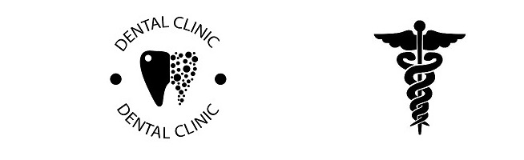

Стоматологічні послуги яким ви можете довіряти.
Наші стоматологи прагнуть надавати виняткові стоматологчні послуги з особистим дотиком, який перевершить ваші очікування. Наша динамічна команда постійно перекваліфікується і вчиться один у одного, щоб ми могли надалі надавати велику стоматологічну допомогу та залишатися попереду гри. Наш клінічний персонал підтримується командою, яка повністю присвячена догляду за пацієнтами, де вони допомагають координувати бронювання та зустрічі, а також загальні аспекти надання допомоги пацієнтам, які Відвідують нашу практику. Ми вітаємо пацієнтів різного віку, яким потрібна допомога з гігієною ротової порожнини та стоматологічною допомогою. Забезпечивши повний підхід до стоматології, наші стоматологи прагнуть підвищити довговічність вашого стоматологічного здоров'я. Якщо ви зіткнулися зі стоматологічною проблемою, наші стоматологи пропонують широкий спектр загальних стоматологічних процедур, а також відновлювальну стоматологію, косметичну стоматологію та стоматологічні призначення. Від білих пломб, зубних імплантів та Вінірів до лікування та відблювання, наша мета - покращити самопочуття та якість життя наших пацієнтів.


Наші лікарі
Дрогобицький А.О.
Ясоківська Р.П.
Драбан Н.В.

Де ми знаходимось
М.Львів вул.Пекарська2